Scoping call
We understand the organisation, the decision ahead, and what success would look like.
Placeholder — no member accounts exist yet
This branch has no login. The control is here to show where a member area would sit, not to imply one is running. Current members are reached by email.
delft.rotterdam@180dc.org
We work with almost any organisation doing good. A team of 4–6 student consultants and a dedicated Team Leader delivers uniquely affordable strategy through one full consulting cycle.
Rotterdam · Markthal 3 / 5
Photo: Radek Kucharski · CC BY 2.0
Start here
There is no form and no application. An email is the whole process, and it does not need to be a polished brief.
Three things are enough to start: who you are, what the challenge is, and what a useful answer would let you decide. If the problem is still vague, say that. Working out the real question is part of what the first conversation is for.
Our focus is social impact, but it is not a gate. Out-of-scope inquiries are welcome, and the branch takes projects case by case.
Consulting cycles: October–January and March–June. If you reach us between cycles, we will tell you when the next one opens rather than leave you waiting.
One consulting cycle
The engagement follows the cycle rather than a made-up week count. Scope and cadence adapt to the organisation and the problem.
We understand the organisation, the decision ahead, and what success would look like.
Scope, deliverables, ways of working, and responsibilities are written down before work begins.
4–6 consultants and a Team Leader research, test, and build the recommendation with regular check-ins.
You receive the final strategy deck and every underlying analysis used to reach it.
Private board review
These are faithful source-slide renders. Open a case to inspect the question, method, recommendation and action path in the visual language delivered to the client.
Not approved for publication. Client consent and the slide-specific conditions shown beside each exhibit are still outstanding. Red-vetoed material is excluded.
Editorial review mode. Four exhibits now show restrained, source-faithful variants for legibility and concision. Each keeps a direct link to the untouched original; the action-plan page remains unchanged as the hierarchy benchmark.
Featured · Partnership strategy
SCEF needed a repeatable way to choose, manage and evaluate partnerships.
Delivered: a strategy architecture, measurement logic, evaluation loop and practical tools.
Inspect 5 source slidesFeatured · Market assessment
One Acre Fund was deciding which product opportunities to take forward in Rwanda.
Delivered: a decision question, explicit criteria, comparative scoring and a sequenced next step.
Inspect 5 source pagesFeatured · Digital presence
GoodHout needed to decide how a small team should build a clearer web and social presence.
Delivered: a phased social plan, website review scope and final channel recommendations.
Inspect 4 source slidesReserve · Financial sustainability
Stahili needed to reduce funding dependency while managing a broad stakeholder set.
Delivered: a funding comparison and a stakeholder prioritisation matrix.
Inspect 2 source slidesReserve · Market positioning
Circular IQ was assessing partnerships and services beyond its current reporting focus.
Delivered: a proposed collaboration model and expansion roadmap.
Inspect 2 source slidesFeatured · Green structure, consent pending
The sequence shows how the team moved from strategy definition to measurement, evaluation and day-to-day tooling. These are proposed frameworks, not evidence of implementation or impact.
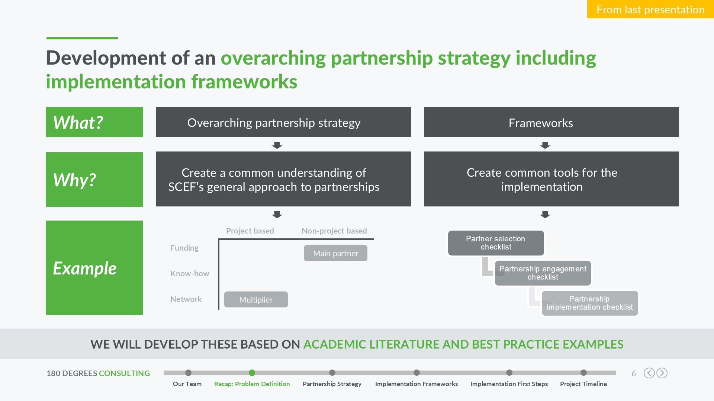
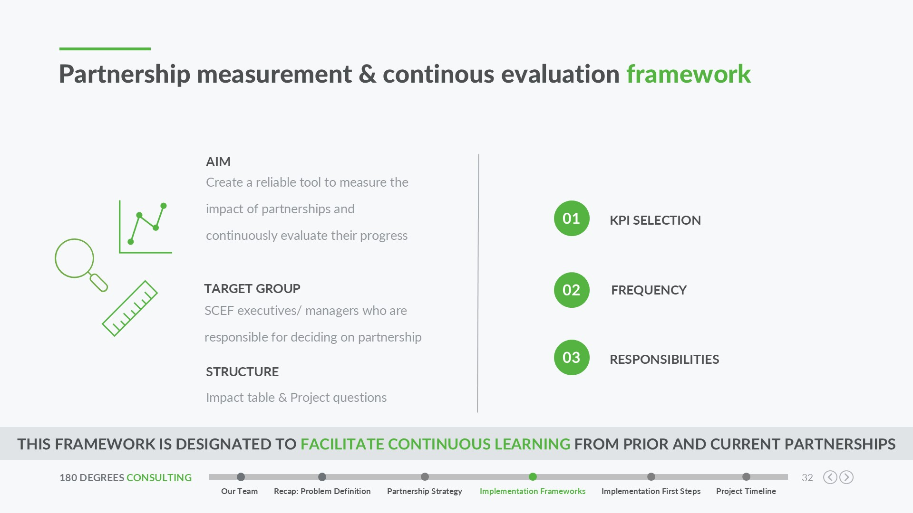
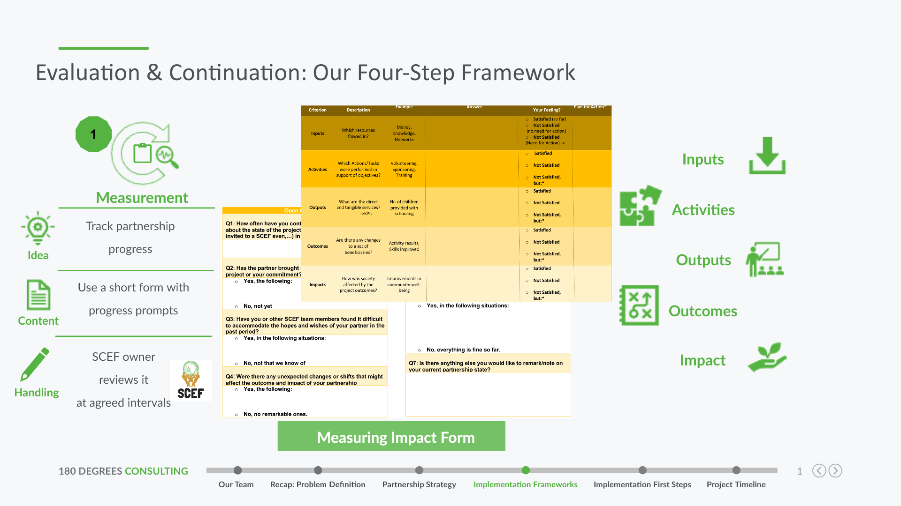
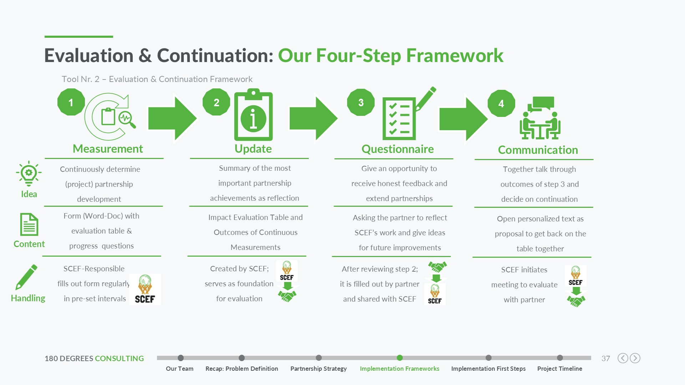
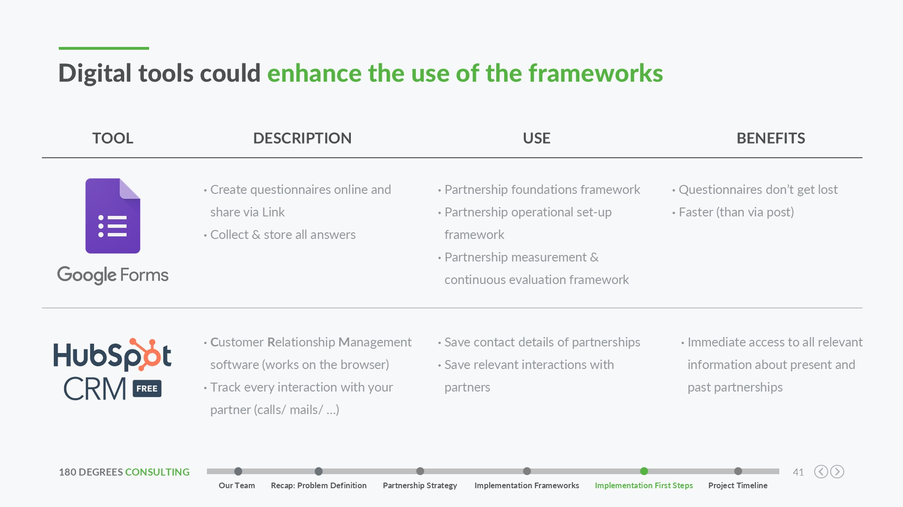
Featured · Amber, content approval required
The source sequence makes the decision question, criteria, scoring and next action visible. The recommendations were explicitly non-final and must stay labelled that way.
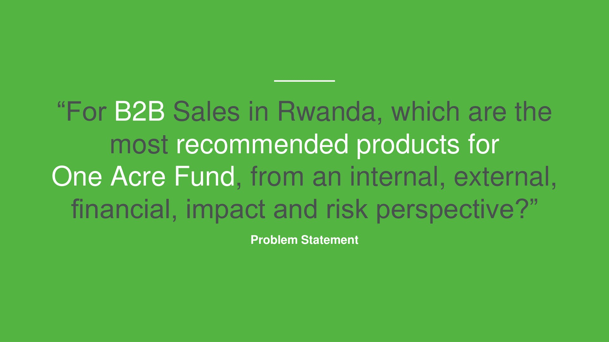
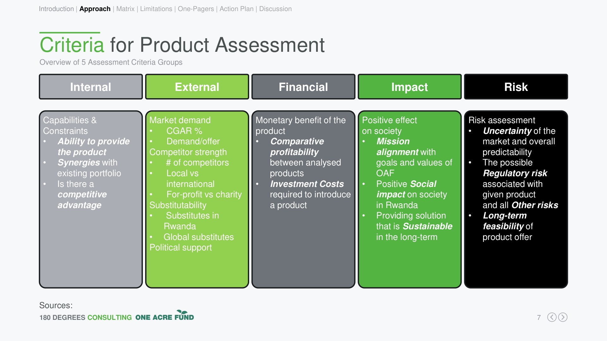
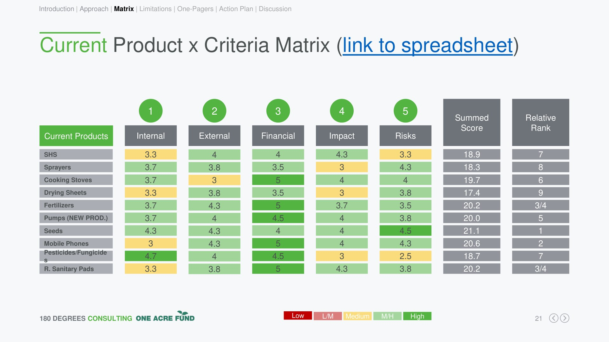
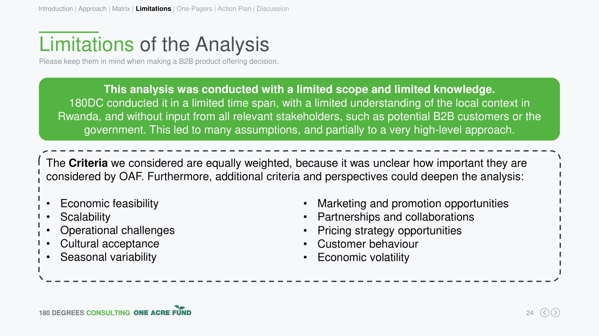
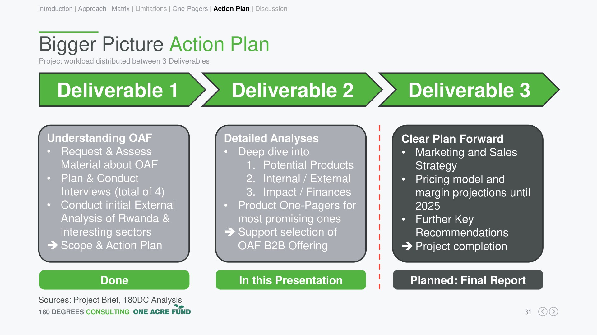
Featured · Mixed green/amber, consent pending
This compact sequence shows a phased plan, the scope of the website review and the recommendations made. It does not claim the client adopted the work or achieved a result.
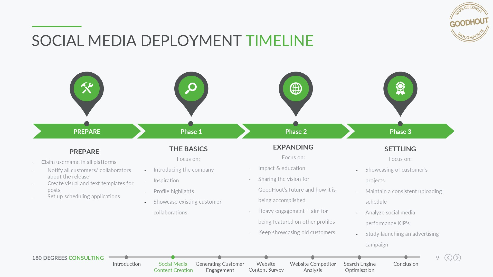
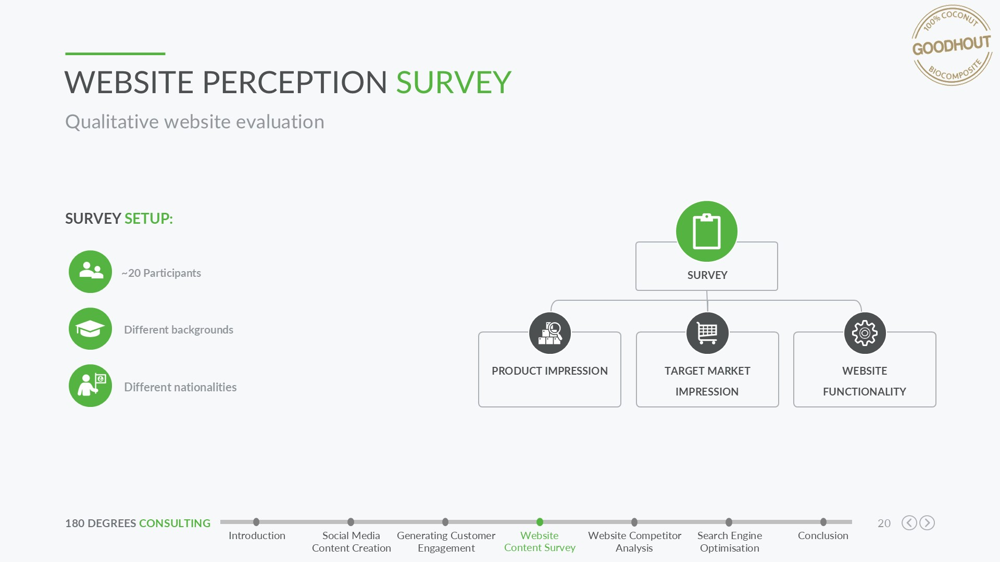
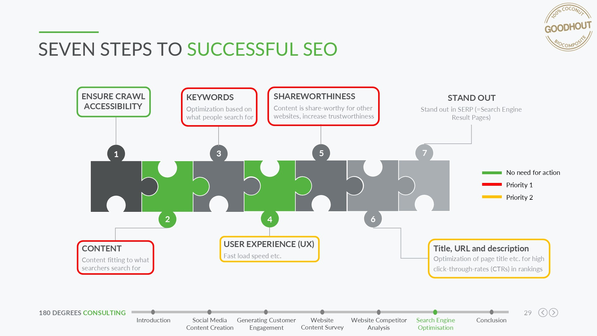
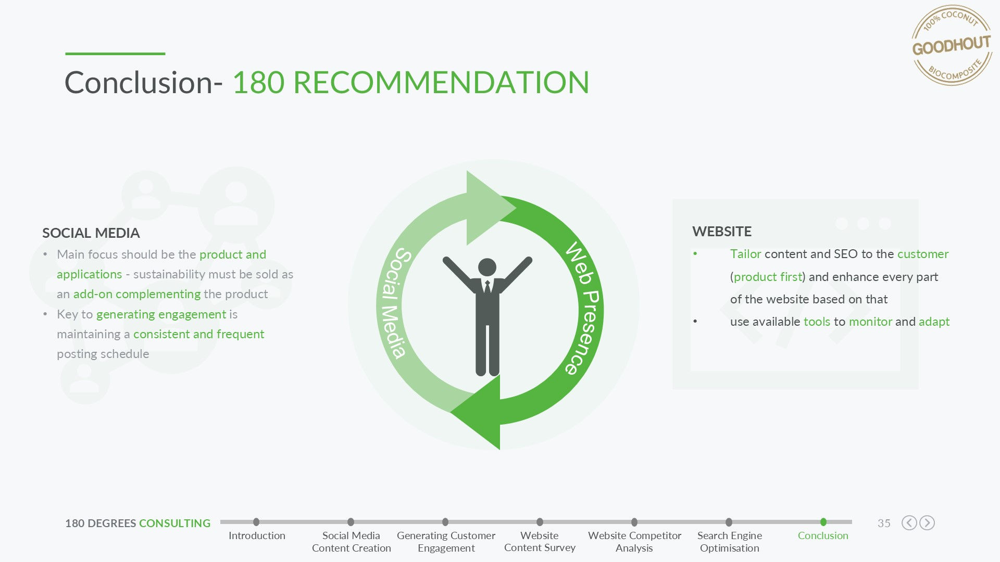
Reserve · Amber, content approval required
Two original slides form a concise decision pair. A third implementation slide was vetoed because its confidential recommendation could not be redacted without changing the meaning.
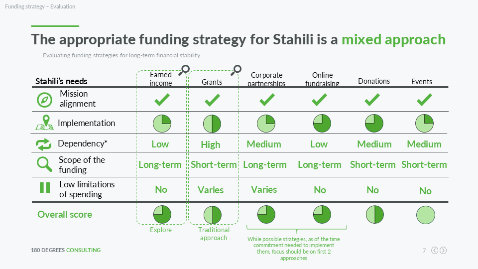
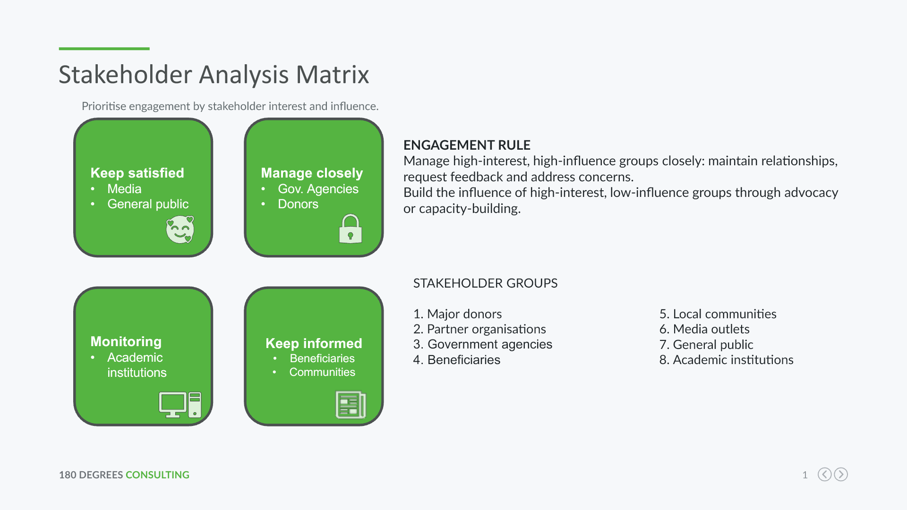
Reserve · Amber, current review required
Only two finished, non-vetoed source slides survive the risk screen. Every technology and framework item is a proposal, not existing capability or work already delivered.
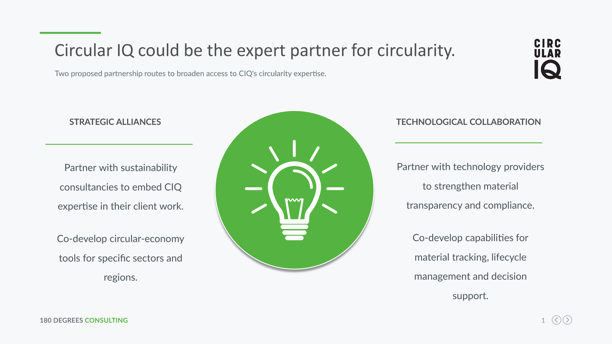
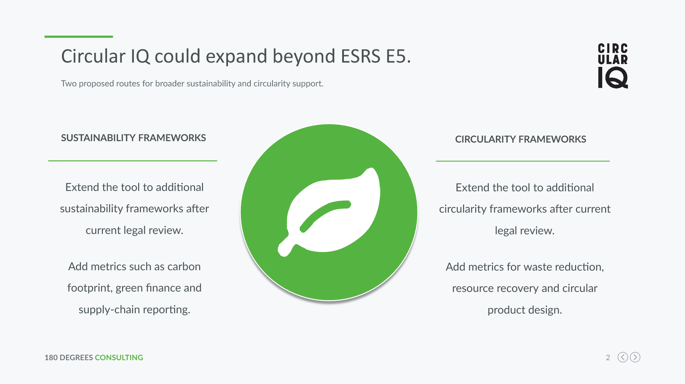
Six starting points
These are the branch's current service areas. We assess every project individually, and out-of-scope inquiries are welcome.
Putting the right tools and processes in place so a small team stops losing hours to manual work.
Reaching the audiences your mission serves, and the donors and volunteers who sustain it.
Building funding models and cost structures that survive beyond the next grant cycle.
Evidence on where demand, partners, and competition actually are before you commit resources.
Finding where effort leaks out of your processes and redesigning them around your capacity.
Defining and tracking the numbers that prove your work works, for boards and funders.
Next step
A short conversation is enough to see whether the challenge, timing, and cycle fit.